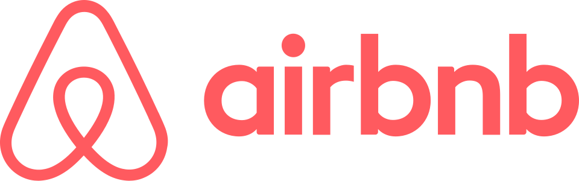

에어비앤비 Airbnb
에어비앤비(Airbnb)는 개인의 방, 집, 별장 등 사람이 머물 수 있는 공간을 호스트와 게스트가 거래하도록 연결하는 미국의 숙박 공유 서비스이다.
최종 업데이트

에어비앤비는 어떤 브랜드인가
에어비앤비는 호스트가 온라인 플랫폼에 숙소의 소개, 사진, 규칙, 가격을 등록하고 게스트가 조건에 맞는 공간을 검색해 예약하는 서비스를 운영한다. 게스트는 숙박 유형, 날짜, 위치, 가격 등을 기준으로 숙소를 찾고 개인정보와 결제정보를 제공해 예약한다.
호스트는 회사의 추천사항을 참고해 가격과 이용 조건을 결정한다. 플랫폼은 집 전체와 아파트, 개인 방뿐 아니라 캠핑카, 보트, 섬 등 여러 형태의 공간을 중개한다.
2016년 기준 191개국 34,000개 도시에서 200만개의 숙박 공간을 제공했으며 누적 이용객 수 8,000만명을 기록했다.
에어비앤비는 어떻게 시작되고 성장했나
브라이언 체스키와 Joe Gebbia는 2007년 10월 샌프란시스코에서 인더스트리얼 디자인 콘퍼런스 기간에 에어베드 앤드 브렉퍼스트의 초기 개념을 만들었다. 2008년 2월 Nathan Blecharczyk가 세 번째 공동창업자로 합류했으며, 세 사람은 숙박 공간을 빌려주는 사람과 빌리는 사람을 연결하는 플랫폼을 구축했다.
2008년 8월 11일 Airbedandbreakfast.com을 공식 출범했다. 2009년 3월 이름을 Airbnb.com으로 변경하고 에어 베드와 공유 공간에서 집 전체, 아파트, 개인 방, 성, 보트, 이글루 등으로 숙소 범위를 확대했다.
에어비앤비의 브랜드 아이덴티티는 무엇인가
직접 숙박시설을 매입하지 않고 다양한 유휴 공간의 호스트와 게스트를 연결하며, 리뷰와 소셜 연결 및 자체 결제로 거래 신뢰를 보완하는 플랫폼이다.
에어비앤비의 대표 제품과 서비스는 무엇인가
호스트는 숙소 소개와 사진, 규칙, 가격 등 이용에 필요한 정보를 플랫폼에 등록하며, 게스트는 지역과 기간, 인원 수, 집 유형, 가격 범위, 시설을 선택해 숙소를 검색한다. 게스트는 숙소 설명과 이용자 리뷰를 확인한 뒤 예약과 결제를 진행하고 호스트의 안내에 따라 체크인과 체크아웃을 한다.
에어비앤비는 Social Connections를 통해 Facebook의 활동과 공통 친구를 확인하는 기능을 제공한다. 투숙객만 작성할 수 있는 리뷰와 자체 지불결제 시스템도 운영하며, 주요 도시의 특정 지역에 머무르는 데 참고할 여행 가이드도 제공한다.
에어비앤비는 지금 어떤 상태인가
에어비앤비는 2008년 설립된 미국 기업이며 본사는 뉴욕이다. 대한민국에서는 2013년 1월 정식 서비스를 시작했고 2014년 한국지사를 설립했으며, 2016년 기준 국내 숙소 약 13,000곳을 확보했다.
2017년 11월 16일 여행 접근성을 다루는 스타트업 Accomable을 인수했다.
에어비앤비 로고는 어떻게 변해왔나
자주 묻는 질문
에어비앤비는 어느 나라 브랜드인가요?
에어비앤비는 미국의 여행·호스피탈리티 브랜드입니다.
에어비앤비는 언제 설립되었나요?
에어비앤비는 2008년 설립되었습니다.
에어비앤비의 브랜드 아이덴티티는 무엇인가요?
직접 숙박시설을 매입하지 않고 다양한 유휴 공간의 호스트와 게스트를 연결하며, 리뷰와 소셜 연결 및 자체 결제로 거래 신뢰를 보완하는 플랫폼이다.
에어비앤비의 대표 제품은 무엇인가요?
호스트는 숙소 소개와 사진, 규칙, 가격 등 이용에 필요한 정보를 플랫폼에 등록하며, 게스트는 지역과 기간, 인원 수, 집 유형, 가격 범위, 시설을 선택해 숙소를 검색한다.
에어비앤비는 현재 어떤 상태인가요?
에어비앤비는 2008년 설립된 미국 기업이며 본사는 뉴욕이다.
에어비앤비의 창업자는 누구인가요?
에어비앤비의 창업자는 브라이언 체스키, Joe Gebbia, Nathan Blecharczyk입니다(위키데이터 기준).
에어비앤비의 본사는 어디에 있나요?
에어비앤비의 본사는 뉴욕에 있습니다(위키데이터 기준).
출처와 검증
에어비앤비 관련 참고: 공식 웹사이트 · 위키데이터 Q63327 · 한국어 위키백과 · 영어 위키백과. 브랜드명은 한글과 원어를 함께 표기하되 데이터에 없는 표기는 만들지 않습니다. 기원 국가·설립연도는 검수된 정의문에서 확인된 값을 우선하고, 없을 때만 공식 웹사이트 URL이 일치하는 위키데이터 개체의 값을 씁니다. 위키데이터 값은 2026-09-12 기준입니다.